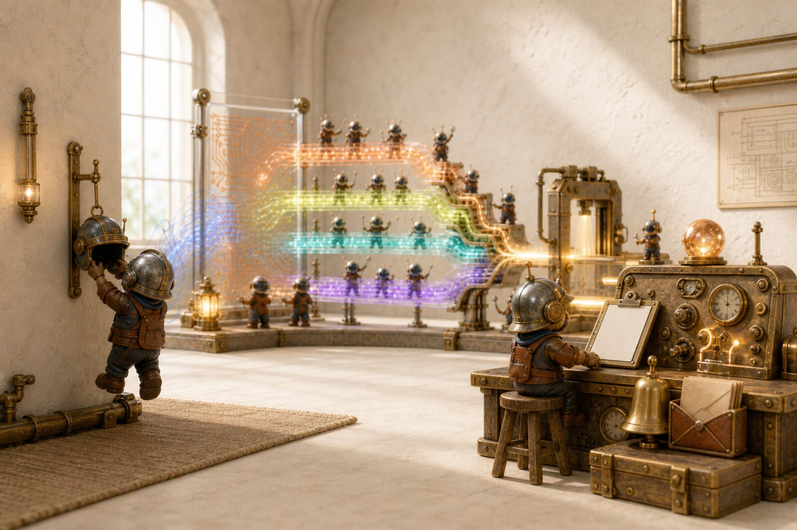

Stay for the gates. Then you can walk away.
Install, /setup, one real goal, sit through every human stop. After that the committed policy is what a teammate inherits.
First hour on the mill, then the settings that let a team walk away without a silent merge.

Install, /setup, one real goal, sit through every human stop. After that the committed policy is what a teammate inherits.
Use the app you actually type in. Open the install steps. Do not paste /plugin into zsh — that is a chat command, not a file path.
/setup is a dashboard, not a wizard that overwrites you. Check observability, notifications, Twin, Beads, then turn on only what you want.
/setup
One new goal: /autonomous. An existing PR: /review-pr. A pile of stories: /automate. Do not start all three at once.
/autonomous "add a daily challenge that resets at midnight UTC"
This is foreground-assisted, not fire-and-forget. Save or refine the brief. Answer rubric gates. Desktop banners fire when the mill needs you.
A healed PR is still an open PR. Read the diff. Merge it. Then run /dreaming after a week so the mill keeps the lessons you actually want.
/review-pr https://github.com/you/repo/pull/42 # bounded review → fix → re-review. Never merges.

One person can hold a mill in their head. Four cannot. So the settings that matter are committed, the dangerous ones are off, and the ones that cost money are a flag you passed on purpose.

Flags live in one person’s shell history. .supervisor/config.json is committed, reviewed, and applies to every run in the repo, including the unattended ones. Toggle the knobs to build yours.
Commit this · .supervisor/config.json
{}
Pass this · per run
/autonomous "…"
Every other surface — /supervisor, /review-pr, the heal loop — terminates with the PR still open. Auto-merge exists in exactly one place, is off unless you pass --auto-merge, and needs all five of these to hold. Anything it cannot read counts as a failure.

The usual first question from anyone who has to sign off on this. The mill reads your repo, your history, and your logs from where they already are. Three things can go outward, and all three are off until someone turns them on.
![Boundary diagram. Staying local: session logs and supervisor state, project memory and System Twin, the insights dashboard, the Obsidian vault, and the Langfuse and OTel observability stack running in Docker on your machine. Crossing by default: branches, commits and pull requests to your own git remote, and prompts to Claude exactly as any Claude Code session sends them. Opt-in only: GitHub-issue telemetry, gate webhooks to a URL you set, and version-controlling memory stores behind a consent step.](assets/data-boundary.svg)
Do not hand a team /automate --auto-merge in week one. Earn each rung.
Prove it on your own branch
Run /setup, then one /autonomous on real but unglamorous work. Sit through every gate. You are calibrating how good the brief has to be, not measuring throughput.
Commit the policy
Seed /rules so a worker reads your conventions while writing, not after review catches them. Commit .supervisor/config.json. Set the real --base-branch. Now a second person gets your setup by cloning.
Make the trunk defensible
Turn on branch protection with a required check. Turn on red_team_high_risk if you touch auth, money, or migrations. Run /insights weekly and /pr-postmortem on the PRs that took four review rounds.
And only where it is boring
/automate on a backlog, parked at the gate for a human. Add --auto-merge only on a path where a wrong merge is cheap to revert: dependency bumps, copy changes, generated files. Never on the surface you would not let a new hire merge alone.
A mill nobody inspects turns into a mill nobody trusts. These four are the operating loop.
Weekly · is it getting better
Local scoreboard: heal rate, review rounds, where sessions burn time. Rendered from your own logs, on your own machine. If the trend is flat, the brief is usually the problem, not the model.
When a PR churns
Sorts every review round into a root cause and attributes it to a stage. Four rounds of the same nit means a missing house rule, not a bad reviewer.
When someone new arrives
Decision, why, what was tried and rejected, current state, provenance, each with its own freshness. Two minutes to inherit context that would otherwise live in one person’s head.
Monthly · keep what worked
Distil sessions into proposed lessons and harvested conventions, delivered as a pull request your team reviews like any other. Accept item by item. Nothing writes itself in.
Shipped
Plan-first Launch Pad, parallel Supervisor, review-and-heal, stacked autonomous loops, automate queues, advisory Twin, dreaming, insights, house rules. You still merge.
In the warp
Run the software in the heal pass. Playwright for web apps. Headless loops against a corpus. A hard pass/fail — not a vibes score — before anything is allowed to gate.
Evidence-gated
Flip advisory conformance to a real gate only after the benchmark has caught real regressions without a false-positive habit. No calendar flip.
Four guardrails first
A watcher that can open PRs unprompted — cadence expiry, per-run budget, circuit-breaker, heartbeat. Not started. Highest-risk rung. Intentionally last.
Director model
You set intent and approve outcomes. Diff-review becomes optional because the mill already proved the behavior. Everyone else rents a coder who starts cold every morning.